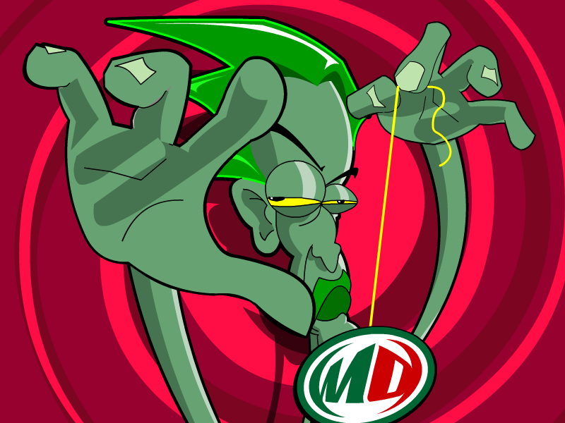

Loading navbar...
Mountain Dew Screensaver

Note: This is a 16-bit program and requires special programs to run on 64-bit Windows, such as
otvdm
.
Note 2: This screensaver will only run on DOS based versions of Windows.
DOWNLOAD
.exe file zipped (289 KB)

 .exe file zipped (289 KB)
.exe file zipped (289 KB)